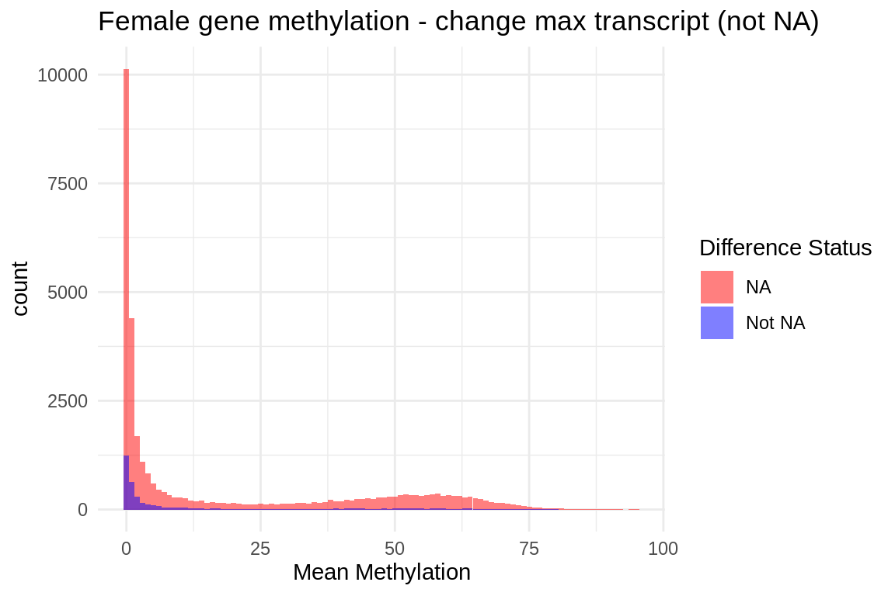
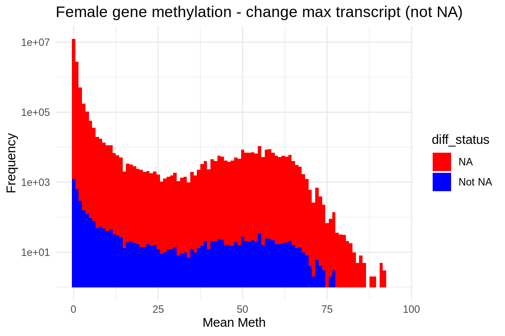
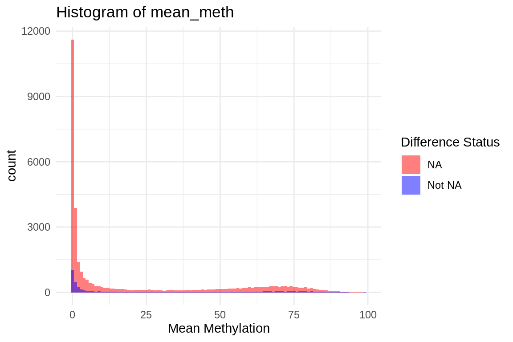

female_tr <- read_csv("../output/34-transcript-counts/diffs.max.transcripts_per_gene.controls_females.vs.exposed_females.csv")76 max transcript methylation
Lets take make a histogram of methylation for those genes that change methylation versus those that do not.. Need to grab one version of the files Sam made and joing with recent (40-based) methylation data
This only has transcripts that change.
fmcoe_max_predom_isos <- read_csv("../supplemental-files/fmcoe-max-predom-isos.csv")lets join
fmmax <- fmcoe_max_predom_isos %>%
left_join(female_tr, by = "gene_name") %>%
select(gene_name, control_females_max_transcript_counts.x, exposed_females_max_transcript_counts.x, difference)lets join methylation data
female_40_meth <- read_csv("../output/73-gene-methylation/female_40_meth.csv") %>%
mutate(name = str_replace(name, "gene-", ""))structure(female_40_meth)# A tibble: 38,523 × 3
name average_control average_exposed
<chr> <dbl> <dbl>
1 ATP6 1.22 1.49
2 COX1 1.13 1.32
3 COX2 1.20 1.36
4 COX3 0.992 1.12
5 CYTB 1.14 1.36
6 LOC111099029 52.9 57.3
7 LOC111099030 0.371 0.293
8 LOC111099031 0.443 0.752
9 LOC111099032 0.251 0.250
10 LOC111099033 0.380 0.311
# ℹ 38,513 more rowscol_name_1 <- names(fmmax)[1] # Get the name of the first column in fmmax
col_name_2 <- names(female_40_meth)[1] # Get the name of the first column in female_40_meth
# Perform the join
fmethmax <- left_join(female_40_meth,fmmax, by = setNames(col_name_1, col_name_2)) %>%
mutate(mean_meth = (average_control + average_exposed)/2) %>%
mutate(diff_meth = (average_exposed - average_control))# Add a new column to indicate whether 'difference' is NA or not
fmethmax$diff_status <- ifelse(is.na(fmethmax$difference), "NA", "Not NA")
# Plot
ggplot(fmethmax, aes(x = mean_meth, fill = diff_status)) +
geom_histogram(position = "identity", alpha = 0.5, binwidth = 1) + # Adjust binwidth as needed
scale_fill_manual(values = c("NA" = "red", "Not NA" = "blue")) +
labs(title = "Female gene methylation - change max transcript (not NA)",
x = "Mean Methylation",
fill = "Difference Status") +
theme_minimal()
ggplot(fmethmax, aes(x = mean_meth)) +
geom_histogram(binwidth = 1, fill = "blue", color = "black") + # Adjust binwidth as needed
facet_wrap(~diff_status, scales = "fixed") +
scale_y_log10() + # Apply log scale to y-axis)
labs(x = "Mean Meth", y = "Frequency") +
theme_minimal() +
ggtitle("Female gene methylation - change max transcript (not NA)")Plot
ggplot(fmethmax, aes(x = mean_meth, fill = diff_status)) +
geom_histogram(binwidth = 1) + # Adjust binwidth as needed
scale_fill_manual(values = c("NA" = "red", "Not NA" = "blue")) +
scale_y_log10() + # Apply log scale to y-axis)
labs(x = "Mean Meth", y = "Frequency") +
theme_minimal() +
ggtitle("Female gene methylation - change max transcript (not NA)")
ggplot(fmethmax, aes(x = difference, y = diff_meth)) +
geom_point() + # This adds the points to the plot
theme_minimal() + # Optional: Applies a minimalistic theme
labs(x = "Max transcript Difference", y = "Meth Difference", title = "max transcript vs. methylation") +
geom_smooth(method = "lm", se = FALSE, color = "blue") # Adds a linear regression line without confidence interval
ggplot(fmethmax, aes(x = difference, y = diff_meth)) +
geom_jitter() + # This replaces geom_point() and adds jitter to the points
theme_minimal() + # Applies a minimalistic theme
labs(x = "Max transcript Difference", y = "Meth Difference", title = "max transcript vs. methylation") +
geom_smooth(method = "lm", se = FALSE, color = "blue") # Adds a linear regression line without confidence intervalmale
male_tr <- read_csv("../output/34-transcript-counts/diffs.max.transcripts_per_gene.controls_males.vs.exposed_males.csv")mmax <- fmcoe_max_predom_isos %>%
left_join(male_tr, by = "gene_name") %>%
select(gene_name, control_males_max_transcript_counts.x, exposed_males_max_transcript_counts.x, difference)lets join methylation data
male_40_meth <- read_csv("../output/73-gene-methylation/male_40_meth.csv") %>%
mutate(name = str_replace(name, "gene-", ""))col_name_1 <- names(mmax)[1] # Get the name of the first column in fmmax
col_name_2 <- names(male_40_meth)[1] # Get the name of the first column in female_40_meth
# Perform the join
mmethmax <- left_join(male_40_meth,mmax, by = setNames(col_name_1, col_name_2)) %>%
mutate(mean_meth = (average_control + average_exposed)/2) %>%
mutate(diff_meth = (average_exposed - average_control))# Add a new column to indicate whether 'difference' is NA or not
mmethmax$diff_status <- ifelse(is.na(mmethmax$difference), "NA", "Not NA")
# Plot
ggplot(mmethmax, aes(x = mean_meth, fill = diff_status)) +
geom_histogram(position = "identity", alpha = 0.5, binwidth = 1) + # Adjust binwidth as needed
scale_fill_manual(values = c("NA" = "red", "Not NA" = "blue")) +
labs(title = "Histogram of mean_meth",
x = "Mean Methylation",
fill = "Difference Status") +
theme_minimal()
ggplot(mmethmax, aes(x = mean_meth, fill = diff_status)) +
geom_histogram(binwidth = 1) + # Adjust binwidth as needed
scale_fill_manual(values = c("NA" = "red", "Not NA" = "blue")) +
scale_y_log10() + # Apply log scale to y-axis)
labs(x = "Mean Meth", y = "Frequency") +
theme_minimal() +
ggtitle("Histogram of Mean Meth by Difference Status")
ggplot(mmethmax, aes(x = difference, y = diff_meth)) +
geom_point() + # This adds the points to the plot
theme_minimal() + # Optional: Applies a minimalistic theme
labs(x = "Max transcript Difference", y = "Meth Difference", title = "max transcript vs. methylation") +
geom_smooth(method = "lm", se = FALSE, color = "blue") # Adds a linear regression line without confidence intervalggplot(mmethmax, aes(x = difference, y = diff_meth)) +
geom_jitter() + # This replaces geom_point() and adds jitter to the points
theme_minimal() + # Applies a minimalistic theme
labs(x = "Max transcript Difference", y = "Meth Difference", title = "max transcript vs. methylation") +
geom_smooth(method = "lm", se = FALSE, color = "blue") # Adds a linear regression line without confidence interval